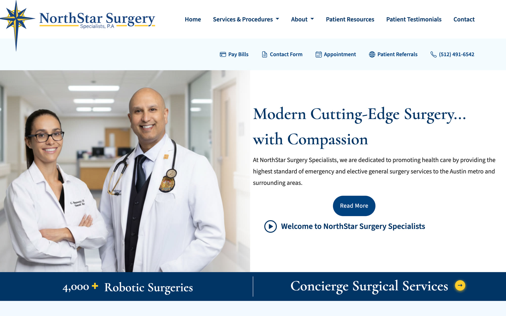
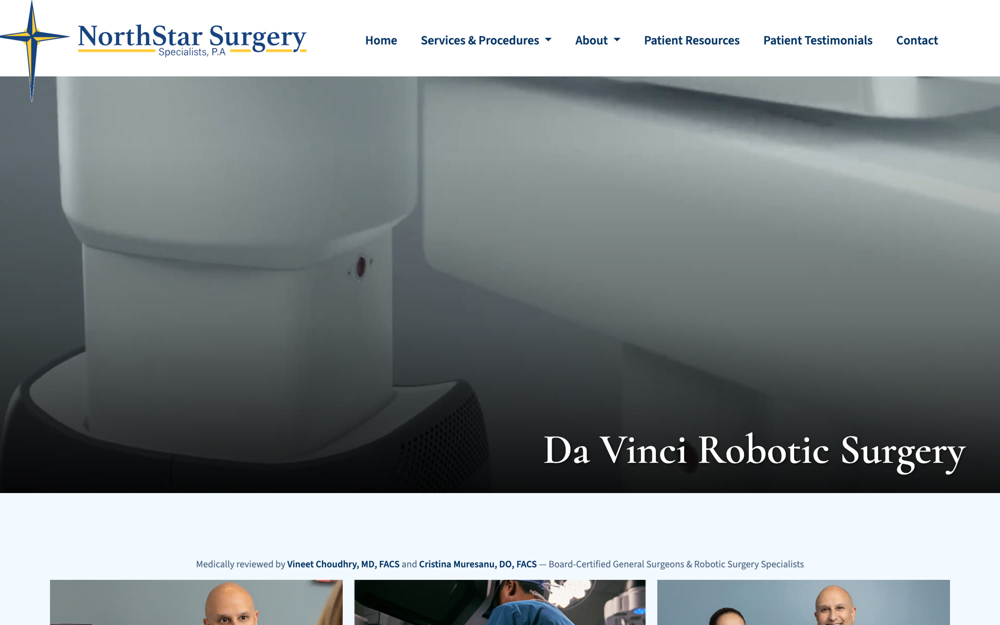

General Surgery Practice · Austin, Texas
NorthStar Surgery
A surgical practice doesn't win patients with a prettier homepage. It wins them by being the answer when someone types "hernia surgeon near me" at 11pm, in Google, in the map pack, and increasingly inside an AI answer that never shows a blue link at all. My job was to build a site that holds up in all three.
See Live
The problem
NorthStar Surgery Specialists is a two-surgeon general surgery practice in Austin, founded in 2008, with more than 4,000 robotic procedures behind it. Clinically, it competes with anyone in the metro. On the web, it was competing with hospital networks that have marketing departments.
Practices like this lose patients in a narrow window. Someone gets a diagnosis, or a referral, or a symptom that frightens them. They search. What they find in the next ninety seconds decides who they call. That search is now split across at least four surfaces, classic organic results, the local map pack, AI-generated answers, and voice assistants, and a site built for only the first one is invisible in the other three.
The brief wasn't "redesign the website". It was: be the practice that gets found, and make the next step obvious once you are.
Design approach
This was a design engineering role rather than a pure design one, the same person doing the information architecture, the markup, the structured data and the performance work, because on a site like this those aren't separate problems. How a page is structured is how it ranks, and how it ranks is the whole business case.
One page per procedure, not one services page
Patients don't search for "general surgery". They search for the specific thing they're frightened of, gallbladder, hernia, hemorrhoids, colorectal, breast. Each procedure got its own page with its own depth, so the page that ranks is the page that answers the exact question, rather than a services index that mentions everything and satisfies nobody.
Credibility as a layout decision
For elective surgery the conversion barrier isn't price, it's trust. Board certification, fellowships, the 4,000+ robotic procedure count, named patient testimonials and the review platforms all sit high in the page order rather than buried on an About page, because the question a visitor is actually asking is "would I let this person operate on me?"
Every page carries the next step
Pay Bills, Contact Form, Appointment, Patient Referrals and the phone number are persistent, not parked on a contact page. A patient reading about hernia repair at midnight and a referring physician sending a patient over need different next steps, and both should be one tap away from wherever they happen to be.
Building for four kinds of search
The site is built against four overlapping surfaces, each of which rewards something different:
- SEO, procedure-level pages, clean heading hierarchy, internal linking between related procedures, and the technical baseline of speed, crawlability and mobile rendering.
- LSO (local search), the practice has to win "near me". That means consistent name, address and phone across the site and directories, location-specific pages for Austin, Round Rock and Cedar Park, embedded practice details, and active review profiles across Google, Facebook, Yelp, Healthgrades and RateMDs.
- GEO (generative engine optimisation), AI answers quote sources that state things plainly and are attributable. Content is written in clear claims tied to named, credentialled surgeons, so a model summarising "robotic hernia surgery in Austin" has something quotable to lift.
- AEO (answer engine optimisation), structured data and question-shaped content so the site can answer directly in featured snippets and voice results, where there is exactly one answer and no second place.
These pull in the same direction more often than not. Marking up a procedure page properly for an answer engine also makes it a better page for a frightened human reading it at midnight, which is the only reason any of it is worth doing.

Turning visits into patients
Ranking is only half of it. A surgical practice has a small number of high-value conversions, a booked consultation, a referral from another physician, so the site is built to qualify rather than just capture.
Procedure pages explain candidacy honestly, including who a procedure isn't for. Financing is surfaced early rather than discovered late. Referral and intake forms are separated from general contact, so a referring physician isn't funnelled through a form written for patients. The result is fewer, better enquiries, people who arrive already knowing what they need and whether this practice does it.
Results
Over the course of the engagement the practice's annual revenue grew by roughly 80%, alongside the search and conversion work described above, more qualified patient enquiries reaching the practice, and more of them converting into booked procedures.
The honest caveat: a surgical practice grows for many reasons at once. A second surgeon joined in 2023, referral relationships compound, and reputation in a metro like Austin builds over years. The website's job was to make sure that when demand existed, NorthStar was the practice that got found and the one that was easy to say yes to.